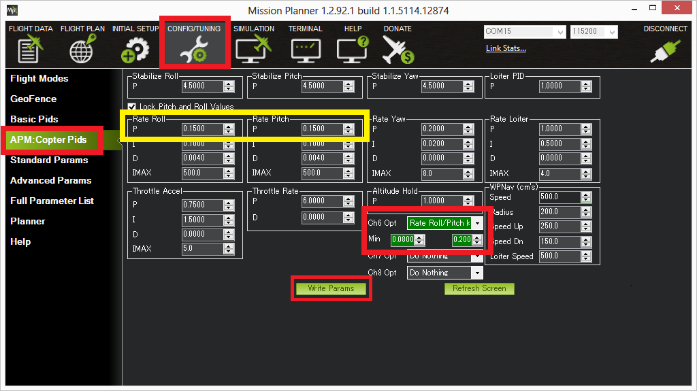

[copywiki destination=”plane,copter”]¶
Transmitter Based Tuning¶
You can perform extensive parameter tuning in flight using your R/C transmitter. This is meant for advanced users who are unable to use the Autotune features or wish to do fine tuning with full manual tuning control of each parameter
Overview¶
Transmitter based tuning allows you to tune a single parameter or a set of parameters while flying. The basic idea is to link the tuning value of a parameter to a knob or slider on your transmitter then to adjust the parameter in flight by moving the knob.
[site wiki=”plane”]
Key features of transmitter based tuning are:
Tune either a single parameter or a whole set of related parameters in a single flight
Re-scale the range of the parameter value linked to the tuning knob using a “selector switch”
Switch between parameters to tune while flying using a selector switch
Save the new parameters in flight
Receive audible feedback from the flight board buzzer and the GCS on tuning progress
Concepts¶
The two key controls for transmitter based tuning are:
A “tuning knob”, setup on your transmitter to a convenient knob or slider and linked to an RC channel that your board receives
An optional “selector switch” for controlling advanced features of the tune. This should be linked to a two position switch mapped to a RC channel that your board receives. A spring loaded switch (such as the trainer switch) works particularly well.
In addition to those input controls the following concepts are useful in understanding the tuning process:
A “parameter set” is a group of related parameters that can be tuned one after the other in a single flight
The “mid-point” is point on the tuning knobs range where it produces a PWM value half way between minimum and maximum
Setting up for tuning¶
To setup your vehicle for tuning you need to set the following parameters:
TUNE_CHAN: the RC input channel associated with your chosen tuning knob
TUNE_CHAN_MIN: the minimum PWM values produced on TUNE_CHAN
TUNE_CHAN_MAX: the maximum PWM values produced on TUNE_CHAN
TUNE_PARAM: the parameter or set of parameters you will be tuning
TUNE_SELECTOR: the RC input channel associated with your chosen selector switch (optional)
TUNE_RANGE: the scaling range which the tuning knob covers
The TUNE_PARAM parameter selects the parameter or set of parameters you will be tuning. Values of TUNE_PARAM less than 100 correspond to individual tunable parameters whereas values of 101 or higher correspond to sets of related parameters that can be tuned one after the other in a flight.
Note
Most of the tuneable parameters apply to the VTOL operation of QuadPlanes. Only TUNE_PARAM values in the 50-57 range are for fixed wing operation.
Use your ground stations parameter interface to see see the full list of tunable parameters and parameter sets available for TUNE_PARAM. For Plane most of the parameters are associated with tuning the QuadPlane VTOL motors as those are the most difficult to tune. You can also tune some fixed wing parameters, although most people find the automatic tuning with AUTOTUNE mode is the best option for fixed wing flight.
If you want to tune a set of parameters (by choosing a TUNE_PARAM value over 100) you must have a selector switch configured with the TUNE_SELECTOR parameter.
Using the tuning knob¶
The basic operation of the tuning knob is very simple. If the tuning knob is at the bottom of its range then the parameter being tuned is set to the initial value divided by the TUNE_RANGE. If the tuning knob is at the top of its range then the parameter being tuned will be set to the initial value multiplied by TUNE_RANGE.
So with a default value for TUNE_RANGE of 2 you will be able to change the parameter in a range from half its initial value to 2x the initial value. This is a good range for many tuning tasks.
Activating the tuning knob¶
When you first start tuning a parameter you will find the tuning knob is not yet active. This is because the knob does not activate until it passes the “mid-point value”, defined as half way between TUNE_CHAN_MIN and TUNE_CHAN_MAX. Activating the tuning knob in this way ensures that you don’t accidentally take off with a large change in tuning value. You are guaranteed to start the tune with a value very close to your current value for the parameter.
When the tuning knob activates by reaching the mid-point the buzzer on the flight board will give a quick “bup-bip” sound to indicate that tuning has been activated.
Re-centering the tuning knob¶
It is quite common to find that the TUNE_RANGE is not wide enough to move the tuning value to the ideal point for your vehicle. For example, you may have started the tune with a P gain for some axis of 0.7, and when you move the tuning knob up all the way the vehicle still hasn’t started oscillating. In that case the tuning value will have reached 1.4 and you need some more range.
To get more range you can use the selector switch to re-center the tuning knob around the current value. Toggle the selector switch briefly high then low and the center-value will change to whatever the tubing knob is set to. When you re-center the tuning knob will de-activate again until you move it to the mid-point position. This prevents you from getting a jump in the tuning value when you re-center.
Tuning multiple parameters¶
You can tune multiple parameters in one flight by setting TUNE_PARAM to one of the “tuning set” parameters. For example, if you set TUNE_PARAM to 101 then you will have 4 different stages to your tune:
Roll: Rate DRoll: Rate P and Rate IPitch: Rate DPitch: Rate P and Rate I
notice that Roll: Rate P and Rate I is actually two parameters in one, controlling
both the P gain and the I gain for roll. This follows the normal
advice for MultiCopters that you should keep the P and I values equal
when doing a manual tune.
When you choose a tuning set with TUNE_PARAM then you will initially be tuning the first parameter in the set. Once you have adjusted that parameter as much as you need to you can move to the next parameter in the set by holding the selector switch for more than 2 seconds. It is suggested that you count to 3 to ensure you are over 2 seconds.
Holding the selector switch for more than 2 seconds will switch you to the next parameter and will also change the tuning knob back to its “wait for mid-point” state on the new parameter. The buzzer on the board will give a loud BEEP sequence to indicate which parameter in the set you have changed to. For the first parameter in the set, you will get one loud BEEP. For the second parameter, you will get two loud BEEPs and so on.
When you have cycled through all of the parameters in the tuning set you have chosen it will wrap back around to the first parameter in the set.
Set Name |
Params Tuned |
|
101 |
Set_RateRollPitch |
Q_A_RAT_RLL_D/Q_A_RAT_RLL_P & Q_A_RAT_RLL_I/ Q_A_RAT_PIT_D/Q_A_RAT_PIT_P & Q_A_RAT_PIT_I |
102 |
Set_RateRoll |
|
103 |
Set_RatePitch |
|
104 |
Set_RateYaw |
|
105 |
Set_AngleRollPitch |
|
106 |
Set_VelXY |
|
107 |
Set_AccelZ |
|
108 |
Set_RatePitchDP |
|
109 |
Set_RateRollDP |
|
110 |
Set_RateYawDP |
|
Saving the tuning results¶
When you are happy with the tune you can save the result by holding the selector switch for more than 5 seconds. After 5 seconds the board will make a rapid bup-bip-bup-bip sound to indicate that the save is complete. If you leave the selector switch in the high position then tuning will remain disabled after the save.
Reverting the tune¶
If you are not happy with your tuning results or the vehicle becomes unstable you should change flight mode. Any change of flight mode will immediately revert all of the parameters you are tuning to the last saved value. However, you can prevent this reversion upon flight mode change by setting the TUNE_MODE_REVERT parameter to 0.
The tuning process¶
The tuning system is designed to make it easy to quickly get a reasonable manual tune on a vehicle in one flight. The most common use for this type of tuning will be in adjusting the rate roll and pitch PID gains. The tuning procedure outlined below is for that particular case.
Setting up¶
To setup for tuning your rate PIDs you should set TUNE_CHAN to your tuning channel, TUNE_SELECTOR to your selector switch and TUNE_PARAM to 101 (which is the “rate roll and pitch PIDs tuning set”).
Then takeoff and switch the vehicle to a comfortable flight mode for rate tuning. For a QuadPlane QHOVER or QLOITER are the best choices.
The first parameter you will be tuning will be RateRollD. To tune that parameter (and the other parameters in the rate roll/pitch set) you should follow this process:
move the tuning knob to the mid-point to activate the knob. You will hear a rapid bup-bip from the board to indicate the tuning knob is activated.
start raising the tuning knob slowly, stopping immediately if the vehicle starts to oscillate. While you raise the gain you should give some small roll inputs on the sticks.
if you get to the top of the tuning knob range and the vehicle has not yet started to oscillate then use the selector switch to re-center the range, then move the tuning knob to the mid-point to reactivate the tuning knob
as soon as you see oscillation you should immediately lower the tuning knob to the point where the oscillation just stops
once the oscillation stops then re-center the tuning knob using the selector switch, then move it to the mid-point to activate it, and then lower the tuning knob all the way down. That will move the tuning value to half of the value that just stopped the oscillation (assuming a TUNE_RANGE of 2). Moving to half of that value will give you enough margin in your tune to ensure your vehicle can handle a wide range of flight conditions.
Once you have completed the above process for the first parameter then you can move to the 2nd parameter by holding the selector switch for a count of 3. You will hear a BEEP BEEP sound from the vehicle indicating that you have moved to parameter 2, which is the RateRollPI parameters. You should then repeat exactly the same tuning process with that parameter.
Keep tuning each parameter in turn using the above process until you are happy with all of them and then save your new tuning parameters by holding the selector switch for more than five seconds. You will know the 5 seconds is up when you hear the distinctive rapid bup-bip-bup-bip sound from the buzzer.
At that point, you can land the vehicle, or just enjoy flying it.
The first time you do a full tune in this way it will probably take about five minutes of flight time to do a tune. With some practice, you can do a full tune in a bit over a minute.
[/site] [site wiki=”copter”]
With transmitter based tuning you can tune single or multiple parameters in flight using Channel 6 of the transmitter.
The TUNE parameter determines which parameter is being tuned.
The TUNE_MAX parameter determines the maximum value of the parameter when the channel is at RC6_MAX, while the TUNE_MIN parameter determines the value when RC channel 6 is at RC6_MIN.
TUNE Values¶
Value |
Meaning |
Parameter |
|---|---|---|
0 |
None |
|
1 |
Stab Roll/Pitch kP |
|
4 |
Rate Roll/Pitch kP |
|
5 |
Rate Roll/Pitch kI |
|
21 |
Rate Roll/Pitch kD |
|
3 |
Stab Yaw kP |
|
6 |
Rate Yaw kP |
|
26 |
Rate Yaw kD |
|
56 |
Rate Yaw Filter |
|
55 |
Motor Yaw Headroom |
|
14 |
AltHold kP |
|
7 |
Throttle Rate kP |
|
34 |
Throttle Accel kP |
|
35 |
Throttle Accel kI |
|
36 |
Throttle Accel kD |
|
12 |
Loiter Pos kP |
|
22 |
Velocity XY kP |
|
28 |
Velocity XY kI |
|
10 |
WP Speed |
|
25 |
Acro RollPitch kP |
|
40 |
Acro Yaw kP |
|
45 |
RC Feel |
|
13 |
Heli Ext Gyro |
|
38 |
Declination |
|
39 |
Circle Rate |
|
46 |
Rate Pitch kP |
|
47 |
Rate Pitch kI |
|
48 |
Rate Pitch kD |
|
49 |
Rate Roll kP |
|
50 |
Rate Roll kI |
|
51 |
Rate Roll kD |
|
52 |
Rate Pitch FF |
|
53 |
Rate Roll FF |
|
54 |
Rate Yaw FF |
|
57 |
Winch |
|
58 |
SysID Magnitude |
|
59 |
|
** Traditional Heli Only
These values can be either set manually or using Mission Planner
Setting with Mission Planner¶
Rate Roll P and Rate Pitch P will be used in the following example procedure
{kind=link}
Connect your autopilot to Mission Planner
On Mission Planner, select CONFIG>>Extended Tuning
Set the TUNE drop down box option to “Rate Roll/Pitch kP”
Set Min to 0.08, Max to 0.20 (most copters ideal gain is within this range although from a small number of copter the Max can be as high as 0.25)
Push the “Write Params” button
Turn your transmitter’s CH6 tuning knob to the minimum position, press the “Refresh Params” button and ensure that the Rate Roll P and Rate Pitch P values become 0.08 (or something very close)
Turn the CH6 knob to its maximum position, press “Refresh Params” and ensure the Rate Roll P moves to 0.20
Move the CH6 knob back to the middle
Arm and fly your copter in Stabilize mode adjusting the ch6 knob until you get a copter that is responsive but not wobbly
After the flight, disconnect your LiPo battery and reconnect the autopilot to the mission planner
With the CH6 knob in the position that gave the best performance, return to the Copter Pids screen and push the “Refresh Params” button
In the Rate Roll P and Rate Pitch P fields re-type the value that you see but just slightly modified so that the mission planner recognizes that it’s changed and resends to the autopilot (Note: if you re-type exactly the same number as what appears in Rate Roll P it won’t be updated). So for example, if the Rate Roll P appears as “0.1213” make it “0.1200”
Set Ch6 Opt back to “None” and push “Write Params”
Push the Disconnect button on the top right, and the Connect
Ensure that the Rate Roll P value is the value that you retyped in step #12
Note
While you are moving the tuning knob the values update at 3 times per second. The need to press the Refresh button in the mission planner in steps #6 and #7 above is just because the Copter is not sending the updates to the mission planner in real-time.
[/site]